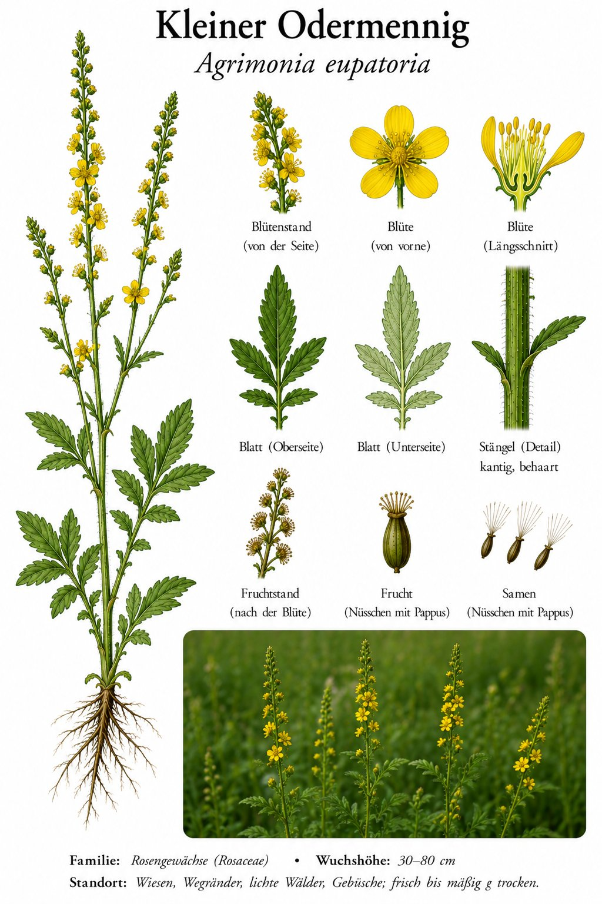

Schlanke gelbe Kerzen am Wegrand — und Früchte, die als blinde Passagiere mitreisen.

Die gelbe Kerze am Wegesrand
Der Odermennig reiht seine kleinen gelben Blüten wie an einer schmalen Kerze übereinander. Von unten her blüht er auf, oben warten noch die Knospen — so zieht sich die Blüte über viele Wochen hin. Zerreibt man die Pflanze, duftet sie leicht würzig, manche finden, ein bisschen nach Aprikose.
Anhalter mit Widerhaken
Ist die Blüte verwelkt, wird aus ihr eine kleine, mit feinen Häkchen besetzte Frucht. Wer im Sommer durch hohes Gras streift, trägt sie als Andenken mit nach Hause — an Hosenbein und Hundefell. Genau so verbreitet die Pflanze ihre Samen: per Anhalter.
Wissenswertes & Merksätze
Erkennungszeichen
Bis 1 m hohe, schmale Blütenähre aus vielen kleinen, fünfblättrigen gelben Blüten. Blätter gefiedert, unterseits weich behaart. Verblüht von unten nach oben; Früchte mit hakigem Klettkranz.
Das „Sängerkraut“
Schon im Mittelalter gurgelte man Odermennig-Tee bei Halsweh und heiserer Stimme — daher der alte Name „Sängerkraut“. Auch als „Leberkraut“ war er hoch geschätzt. Heute trinkt man ihn eher als milden Tee, aber der gute Ruf hält sich hartnäckig.